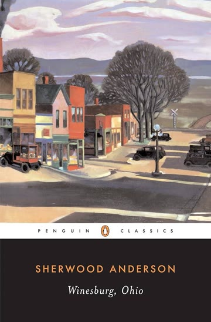

英語専攻でアメリカ文学ゼミに所属。19世紀出版のアメリカ文学短編集を読み、通ずるテーマである「グロテスク」の考察を当時の時代背景と合わせながら行っている。
「グロテスク」の定義：一つのことに（それが正義・正しい・真実と信じて）盲目的に執着すること。固有のグロテスクを持った登場人物を読み進める中で、読者である私たちも、何らかの形でグロテスクを抱えているのではないかと考えさせてくれる。
毎週二編ずつ読んで考察をA4レポートにまとめて提出するので、考察する力や考えを言語化する能力が付いてきているように思う。
主に図書館。カフェやファミレスを利用することもある。
Claude Codeに課金して、授業内容をNotionにまとめさせて学習を効率化している。